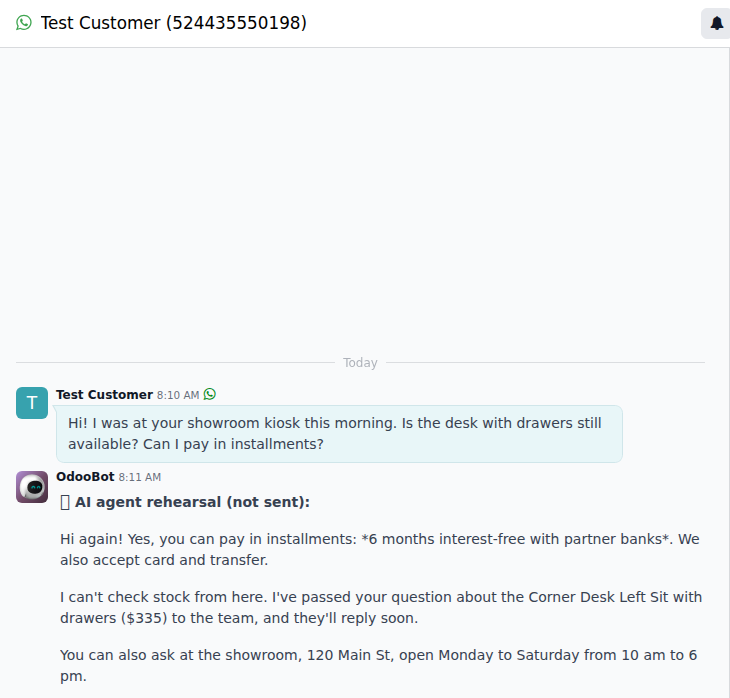

Most questions on WhatsApp are the same ones: how much is it, when are you open, do you have time on Tuesday? If nobody answers within minutes, the customer writes to the next business on the list.
Answering them takes your team away from the work, and at night or on weekends nobody answers at all.
The agent (Anthropic Claude) answers every message on your WhatsApp number, inside Odoo, in the language the customer writes in. It uses only what you wrote in its knowledge base, so it never makes up prices or promotions.
When someone is interested it creates the opportunity in your CRM, and when they want to book it offers real free slots and books the appointment in Odoo Appointments.
#agente or #bot to hand it back.
With our Self-Order Kiosk - Virtual Seller (AI), the free add-on Virtual Seller + WhatsApp AI Agent joins them:
It installs by itself when both apps are present.
anthropic on the server (pip install anthropic).Support: soporte@xubax.com · www.xubax.com